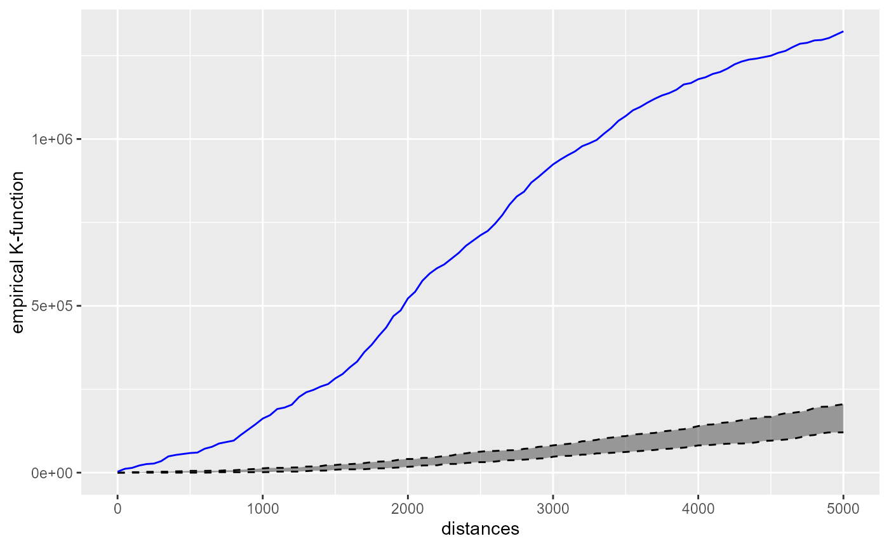
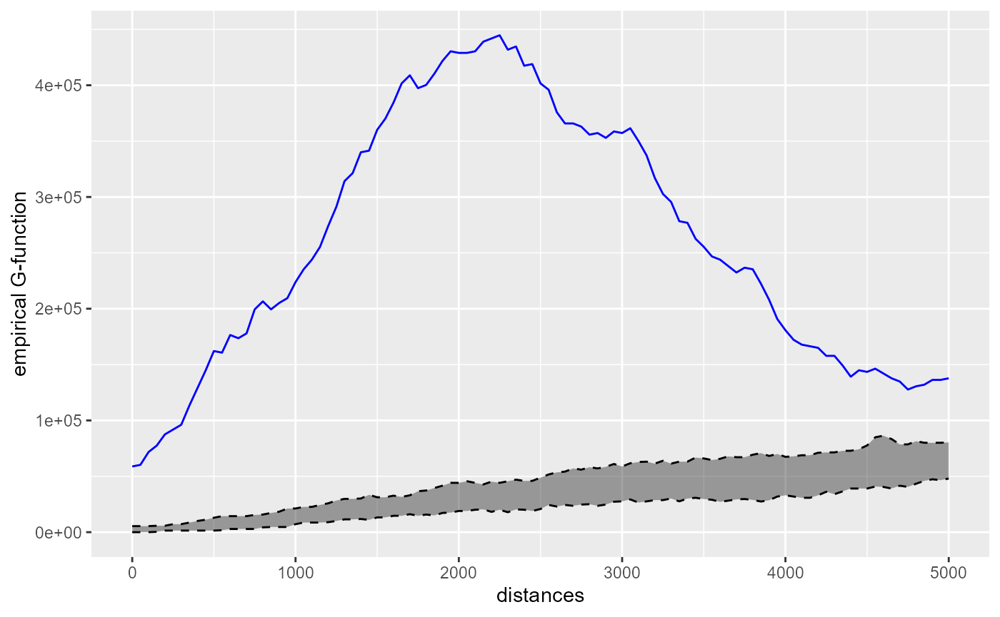
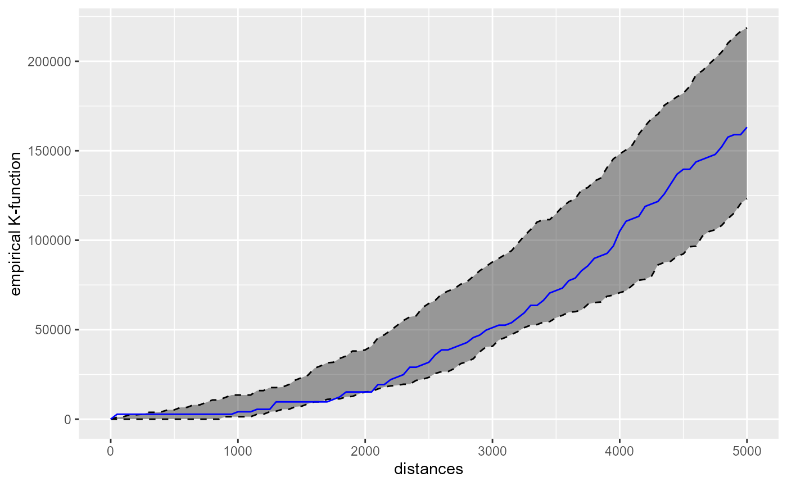
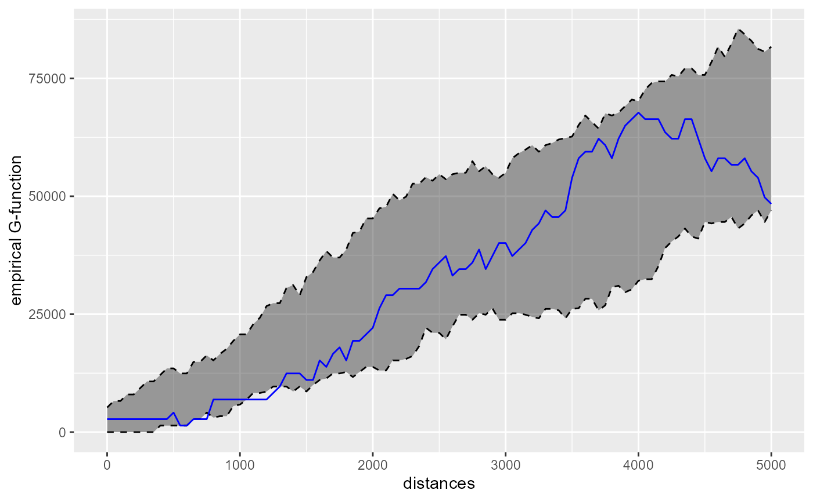
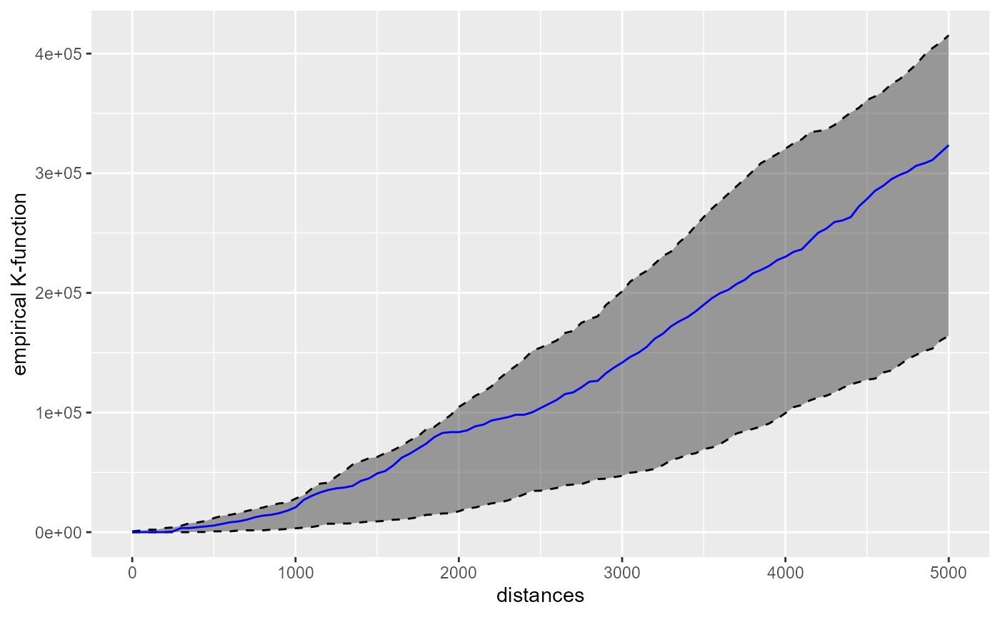
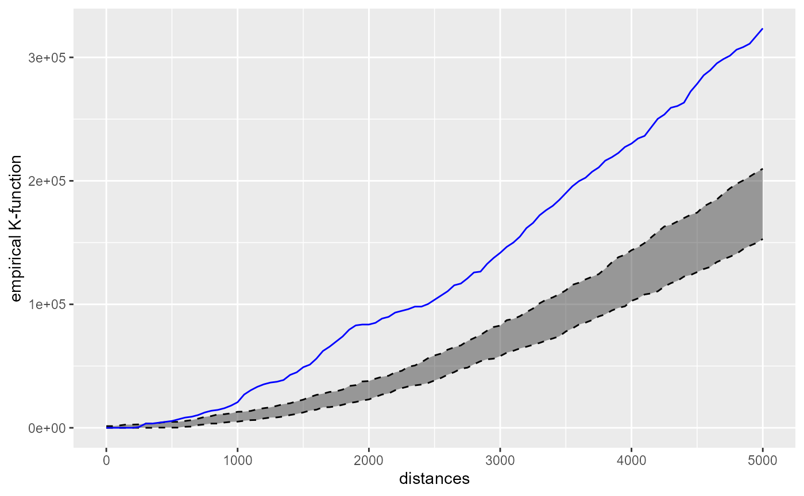

Network k Functions
Jeremy Gelb
2024-12-29
Source:vignettes/KNetworkFunctions.Rmd
KNetworkFunctions.RmdIntroduction
The K-function is a method used in spatial Point Pattern Analysis (PPA) to inspect the spatial distribution of a set of points. It allows the user to assess if the set of points is more or less clustered that what we could expect from a given distribution. Most of the time, the set of point is compared with a random distribution.
The empirical K-function for a specified radius \(r\) is calculated with the following formula:
\[\hat{K}(r)=\frac{1}{n(n-1)} \sum_{i=1}^{n} \sum_{j=1 \atop j \neq i}^{n} \mathbf{1}\left\{d_{i j} \leq r\right\}\] Basically, the K-function calculates for a radius \(r\) the proportion of cells with a value bellow \(r\) in the distance matrix between all the points \(D_{ij}\). In other words, the K-function estimates “the average number of neighbours of a typical random point” (Baddeley, Rubak, and Turner 2015).
A modified version of the K-function is the G-function (Pair Correlation Function) (Stoyan and Stoyan 1996). The regular K-function is calculated for subsequent disks with increasing radii and thus is cumulative in nature. The G-function uses rings instead of disks and permits the analysis of the points concentrations at different geographical scales.

When the points are located on a network, the use of the Euclidean distance systematically underestimates the real distance between points. These two functions can be extended for network spaces by using the network distance instead of the Euclidean distance. The value of the empirical k function on a network is calculated with the following formula:
\[\begin{equation} K(r)=\frac{1}{\frac{(n-1)}{Lt}} \frac{\sum_{i=1}^n n\left(r \mid p_i\right)}{n} . \end{equation}\]
With:
- \(Lt\) the total length of the network and \(n\) the number of events.
- \(n\left(r \mid p_i\right)\) the number of events arround the event i within a distance r.
- n the total number of events.
The network K-function in spNetwork
It is possible to calculate the K and G functions with
spNetwork with the function kfunctions.
The inference is based on Monte Carlo simulations. The observed K and G
function are graphically compared to n simulated dataset for
which the points are randomly located on the network.
We present here a short example with the case of theatres and libraries in Montreal.
library(spNetwork)
library(tmap)
data(main_network_mtl)
data(mtl_libraries)
data(mtl_theatres)
tm_shape(main_network_mtl) +
tm_lines("black") +
tm_shape(mtl_libraries) +
tm_dots(col = "red", size = 0.2) +
tm_shape(mtl_theatres) +
tm_dots(col = "blue", size = 0.2)As one can see, the theatres seems to be more clustered than the libraries.
kfun_theatre <- kfunctions(lines = main_network_mtl,
points = mtl_theatres,
start = 0,
end = 5000,
step = 50,
width = 1000,
nsim = 50,
resolution = 50,
verbose = FALSE,
conf_int = 0.05,
digits = 2,
tol = 0.1,
agg = NULL,
return_sims = FALSE,
calc_g_func = TRUE)
kfun_theatre$plotk
The blue line is the empirical network K-function of the theatres in Montreal. The gray area represents the results of the 50 simulations in the interval 2.5% - 97.5%. Because the blue line is way above the gray area, we can conclude that the theatres are more clustered than what we can expect from a random distribution. (Note: usually, more simulations are required for inference).
kfun_theatre$plotg
The G-function is also indicating a clustering situation, which is maximum between two and three kilometres. This is consistent with the fact that we have a high concentration of theatres in the central neighbourhoods and then more dispersed points. We can perform the same analysis for libraries.
kfun_biblio <- kfunctions(main_network_mtl,
mtl_libraries,
start = 0,
end = 5000,
step = 50,
width = 1000,
nsim = 50,
resolution = 50,
verbose = FALSE,
conf_int = 0.05,
digits = 2,
tol = 0.1,
agg = NULL,
return_sims = FALSE,
calc_g_func = TRUE)
kfun_biblio$plotk
Mostly, one can conclude form the charts that the libraries tend to be randomly spaced. Below two kilometers, we tend to observe a little bit of systematic diversion. The chart of the G-function confirms this observation :
kfun_biblio$plotg
The network cross-K-function in spNetwork
The cross-K-function is used to determine if two set of points A and B tend to be close or far away one from each other. For a radius r, the empirical cross-K-function is calculated with the following formula :
\[\hat{K}(r)=\frac{1}{n_a n_b)} \sum_{i=1}^{n_a} \sum_{j=1}^{n_b} \mathbf{1}\left\{d_{i j} \leq r\right\}\]
On a network, the formula is adapted:
\[\begin{equation} K_{\mathrm{AB}}(r)=\frac{1}{\rho_{\mathrm{A}}} \frac{\sum_{i=1}^{n_{\mathrm{B}}} n\left(r \mid p_{\mathrm{B} i}\right)}{n_{\mathrm{B}}} \end{equation}\]
With:
- \(\rho_{\mathrm{A}} = n_{\mathrm{A}} / L_t\)
- \(n\left(r \mid p_{\mathrm{B} i}\right)\) the number of points in group B counted arround the point i in group A within a radius r
- \(n_a\) the number of points in A and \(n_b\) the number of points in B
- \(Lt\) the total length of the network.
Note that the cross-K-function A to B is not necessarily the same results as the cross-K-function B to A. Again, in spNetwork, the inference is based on Monte Carlo Simulations. The locations of the reference set of points are randomized to estimate if the current situation is more or less clustered that what we could expect at random.
cross_biblio_theatre <- cross_kfunctions(
lines = main_network_mtl,
pointsA = mtl_libraries,
pointsB = mtl_theatres,
start = 0,
end = 5000,
step = 50,
width = 1000,
nsim = 50,
conf_int = 0.05,
digits = 2,
tol = 0.01,
resolution = NULL,
agg = NULL,
return_sims = FALSE,
calc_g_func = TRUE,
verbose = FALSE)
cross_biblio_theatre$plotk
One can conclude from the chart that the libraries are randomly located around the theatres and display nor clustering nor dispersion around theatres.
cross_theatre_biblio <- cross_kfunctions(
lines = main_network_mtl,
pointsA = mtl_theatres,
pointsB = mtl_libraries,
start = 0,
end = 5000,
step = 50,
width = 1000,
nsim = 50,
conf_int = 0.05,
digits = 2,
tol = 0.01,
resolution = NULL,
agg = NULL,
return_sims = FALSE,
calc_g_func = TRUE,
verbose = FALSE)
cross_theatre_biblio$plotk
However, this second chart shows that the theatres tend to be clustered around libraries. This is coherent with the map above. A random library is often located far from the theatres. But the theatres are concentrated in the city centre and close to some specific libraries.
Multicore calculation
The functions shown above have multicore counterparts :
kfunctions.mccross_kfunctions.mc
They can be used to split the dataset with a grid and share the calculation through multiples core of the CPU. This add a little bit of overhead to prepare the data in each quadra, but with a big dataset, one could expect reduced calculation time.
future::plan(future::multisession, workers = 1)
cross_biblio_theatre_mc <- cross_kfunctions.mc(
lines = main_network_mtl,
pointsA = mtl_libraries,
pointsB = mtl_theatres,
start = 0,
end = 5000,
step = 50,
width = 1000,
nsim = 50,
conf_int = 0.05,
digits = 2,
tol = 0.01,
resolution = NULL,
agg = NULL,
return_sims = FALSE,
calc_g_func = TRUE,
verbose = TRUE,
grid_shape = c(2,2)
)Very small differences could be observed between the values obtained from the multicore and single core functions. This is caused by the gridding process and rounding during calculation.
Space-time K functions
It is also possible to analyze data with a temporal dimension. The idea is to count the number of events occurring within a network and a time bandwidth.
For the K function, the formula is simply:
\[\begin{equation} K(r_{net},r_{time})=\frac{1}{\frac{(n-1)}{L_{net} * L_{time}}} \frac{\sum_{i=1}^n n\left(r_{net},r_{time} \mid p_i\right)}{n} . \end{equation}\]
With:
- \(L_{net}\) and \(L_{time}\) the total length of the network and the total observation period.
- \(n\left(r_{net},r_{time} \mid p_i\right)\) the number of events around the event i within a distance \(r_{net}\) on the network and \(r_{time}\) in time.
This feature is still experimental. More detailed examples and documentation will come in the future.
We demonstrate here how to use it with the bike accidents data.
data("bike_accidents")
data("mtl_network")
tm_shape(mtl_network) +
tm_lines("black") +
tm_shape(bike_accidents) +
tm_dots(col = "red", size = 0.2)We must first convert the date column as a numeric. It will be measured with days in this example.
# converting the Date field to a numeric field
# (counting days from first accident)
bike_accidents$Time <- as.POSIXct(bike_accidents$Date, format = "%Y/%m/%d")
start <- as.POSIXct("2016/01/01", format = "%Y/%m/%d")
bike_accidents$Time <- difftime(bike_accidents$Time, start, units = "days")
bike_accidents$Time <- as.numeric(bike_accidents$Time)
net_time_values <- k_nt_functions(
lines = mtl_network,
points = bike_accidents,
points_time = bike_accidents$Time,
start_net = 0,
end_net = 1500,
step_net = 50,
width_net = 200,
start_time = 0,
end_time = max(bike_accidents$Time),
step_time = 7,
width_time = 14,
nsim = 500,
conf_int = 0.05,
digits = 2,
tol = 0.01,
resolution = NULL,
agg = NULL,
verbose = TRUE,
calc_g_func = TRUE
)Because there is two dimensions (network and time), we cannot represent it with the classical plot.
df_plot <- lapply(1:nrow(net_time_values$obs_k), function(i){
df <- data.frame(
k_obs = net_time_values$obs_k[i,],
k_low = net_time_values$lower_k[i,],
k_upp = net_time_values$upper_k[i,],
net_dist = net_time_values$distances_net[[i]],
time_dist = net_time_values$distances_time
)
return(df)
})
df_plot <- do.call(rbind, df_plot)
df_plot$sign <- ifelse(df_plot$k_obs > df_plot$k_upp, 'concentrated', 'random')
df_plot$sign <- ifelse(df_plot$k_obs < df_plot$k_low, 'dispersed', df_plot$sign)
ggplot() +
geom_raster(
data = subset(df_plot, df_plot$sign != 'random'),
mapping = aes(x = time_dist, y = net_dist, fill = k_obs )) +
geom_raster(
data = subset(df_plot, df_plot$sign == 'random'),
mapping = aes(x = time_dist, y = net_dist), fill = 'grey')The above figure shows that the bike accidents are more concentrated than one would expect from random dispersion in both time and space.
df_plot <- subset(df_plot, df_plot$net_dist > 0 & df_plot$time_dist > 0)
df_plot$diff <- (df_plot$k_obs - df_plot$k_upp) / df_plot$k_obs
ggplot() +
geom_raster(
data = subset(df_plot, df_plot$sign != 'random'),
mapping = aes(x = time_dist, y = net_dist, fill = diff)) +
geom_raster(
data = subset(df_plot, df_plot$sign == 'random'),
mapping = aes(x = time_dist, y = net_dist), fill = 'grey')Also, it appears that the concentration of events is greater in the network dimension in comparison to the time dimension. The difference between the simulated values (random events locations) of K and the real values of K decreases faster with greater network radii than greater time radii.